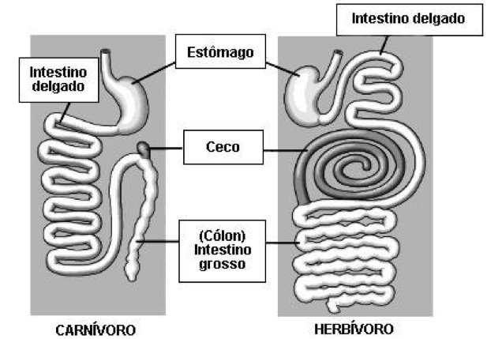
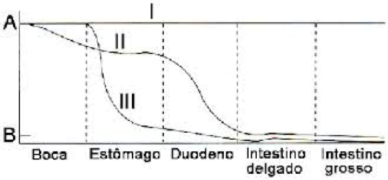
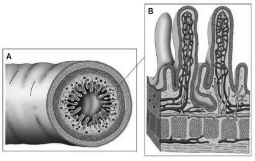

1. Relacione o nome dos órgãos que participam da digestão com sua posição no corpo humano.
| 1 |
Boca |
| 2 |
Estômago |
| 3 |
Esôfago |
| 4 |
Vesícula biliar |
| 5 |
Pâncreas |
| 6 |
Fígado |
| 7 |
Intestino delgado |
| 8 |
Intestino grosso |
2. Argumente sobre as adaptações evolutivas que tornaram os tratos digestivos de carnívoros e herbívoros diferentes (explique porque o coelho possui um intestino longo e a raposa possui um intestino curto).

3. Durante o almoço, certo rapaz comeu um cachorro quente composto de pão, salsicha e milho. Devido à pressa, nosso companheiro teve que comer correndo e acabou não mastigando o milho direito. O gráfico a seguir mostra a absorção dos nutrientes pelo trato digestivo. Sabendo que o pão é majoritariamente degradado em glicose, a salsicha em proteína e o milho possui uma capa de celulose que quando não mastigada impede a absorção do mesmo, Identifique-os no gráfico e justifique sua resposta.

4. O médico cirurgião Eduard-mãos de bisturi, não realizou seus roteiros de digestão na época da escola e precisa de sua ajuda para decidir como operar um paciente que deseja perder peso por meio de menos ingestão de calorias. A operação se dará por meio do corte de parte do trato digestório. As opções do Eduard-mãos de bisturi são tirar uma parte do esôfago, do duodeno ou do intestino grosso. Ajude o médico a decidir o que fazer e justifique sua escolha para convencê-lo.
5. Nosso intestino possui diversas reentrâncias chamadas de vilosidades. Uma característica dessas vilosidades é a grande presença (vascularização) de capilares sanguíneos. Explique os benefícios que as curvas e vilosidades presentes no intestino proporcionam e as relacione com sua alta vascularização.

6. Explique 3 formas diferentes de se conservar alimentos